- Plotting Packages
- Data Type & Dataset
- The Basic Package
- The
latticeandlatticeExtraPackages - Additional Packages
- The
smPackage (density) - The
carPackage (scatter) - The
vioplotPackage (boxplot) - The
vcdPackage (count, correlation, mosaic) - The
hexbinPackage (scatter) - The
carPackage (scatter) - The
scatterplot3dPackage - The
rglPackage (interactive) - The
clusterPackage (dendrogram) - The
extracatPackage (splom) - The
ashPackage (density) - The
KernSmoothPackage (density) - The
corrplotPackage (correlation)
- The
Foreword
- Output options: the ‘tango’ syntax and the ‘readable’ theme.
- Code snippets and results.
- Some data might necessitate more specialized packages.
- For explaining data, presenting results, reporting and publishing,
we can generate prettier graphics withggvisorggplot2, and
interactive packages such asshiny.
Plotting Packages¶
Graphics:
mapsfor grids and mapping.diagramfor flow charts.plotrixfor ternary, polar plots.gplots.pixmap,png,rtiff,ReadImages,EBImage,RImageJ.leaflet.
Grid:
vcdfor mosaic, ternary plots.grImportfor vectors.ggplot2and extensions.latticeandlatticeExtra.gridBase.
grDevices:
JavaGD.Cairo.tikzDevice.
Interactive:
rgl.ggvis.iplots.rggobi.
Others:
ashfor density plots.clusterfor dendrograms.copulafor multivariate analyses.corrplotfor correlations.compositionsfor geometries, ternary plots.extracatfor missing values.soiltexturefor ternary plots and more.KernSmoothfor histograms-density plots.openairfor polar, circular plots.smfor density plots.carfor scatter plots.vioplotfor boxplots.vcdfor mosaic plots and multivariate analyses.hexbinfor scatter plots.scatterplot3dfor 3D scatter plots.clusterfor dendrograms.shinyfor interactive plots.ggvis.
Data Type & Dataset¶
Data Types¶
- continuous vs categorical (or discrete).
- continuous: float, x-y-z, 3D, map coordinates, trianguar, lat-long,
polar, degree-distance, angle-vector. - categorical: integer, binary, dichotomic, dummy, factor,
ordinal (ordered).
Continuous variable characteristics:
- asymmetry.
- outliers.
- multimodality.
- gaps, missing values.
- heaping, redundance.
- rounding, integer.
- impossibilities, anomalies.
- errors.
- …
Categorical variable characteristics:
- unexpected pattern of results.
- uneven distribution.
- extra categories.
- unbalanced experiments.
- large numbers of categories.
- NA, errors, missings…
- nominal: no fixed order.
- ordinal: fixed order (scale of 1 to 5).
- discrete: counts, integers.
- dependencies, correlation, associations.
- causal relationships, outliers, groups, clusters, gaps, barriers,
conditional relationship. - …
Univariate main plots:
- histogram.
- density.
- qqmath chart.
- box & whickers chart.
- bar chart.
- dot.
Bivariate main plots:
- xy chart.
- qq chart.
Trivariate main plots:
- cloud.
- wireframe.
- countour.
- level.
Multivariate main plots:
- sploms.
- parallel charts (coordinate).
Specialized plots:
- frequencies, crosstabs: bar charts, mosaic plots, association plots.
- correlations: sploms, pairs, correlograms.
- t-tests, non-parrametric tests of group differences: box plot,
density plot. - regression: scatter plot.
- ANOVA: box plots, line plots.
Functions¶
Create a new variable
iris2 <- within(iris, area <- Petal.Width*Petal.Length)
head(iris2, 3)
## Sepal.Length Sepal.Width Petal.Length Petal.Width Species area
## 1 5.1 3.5 1.4 0.2 setosa 0.28
## 2 4.9 3.0 1.4 0.2 setosa 0.28
## 3 4.7 3.2 1.3 0.2 setosa 0.26
area <- with(iris, area <- Petal.Width*Petal.Length)
head(area, 3)
## [1] 0.28 0.28 0.26
Dataset¶
For most examples, we use the mtcars dataset.
Prepare the dataset.
attach(mtcars)
Get data attached to a package (an example).
data(gvhd10, package = 'latticeExtra')
The Basic Package¶
Basic Plots, Options & Parameters¶
Standardize the parameters (an example)
# color and tick mark text orientation
par(col = 'black', las = 1)
Grid and layout
One plot.
plot(hp, mpg, xlab = 'horsepower', ylab = 'miles per gallon')
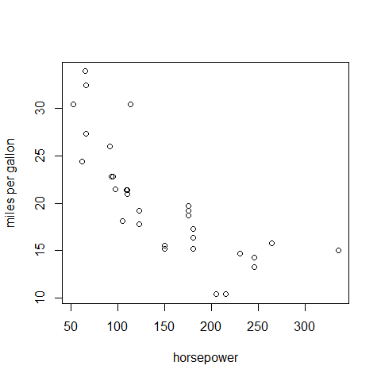
A grid of plots.
par(mfrow = c(2, 1))
plot(mpg, hp, ylab = 'horsepower', xlab = 'miles per gallon')
boxplot(mpg ~ cyl, xlab = 'mile per gallon', ylab = 'number of cylinders', horizontal = TRUE)
par(mfrow = c(1, 2))
plot(mpg, hp, ylab = 'horsepower', xlab = 'miles per gallon')
boxplot(mpg ~ cyl, xlab = 'mile per gallon', ylab = 'number of cylinders', horizontal = TRUE)
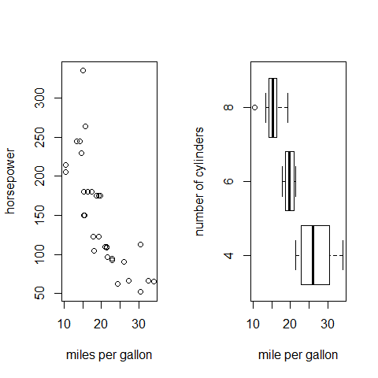
par(mfrow = c(1, 1))
Other grids.
layout(matrix(c(1,1,2,3), 2, 2, byrow = TRUE))
plot(mpg, xlab = 'observations', ylab = 'miles per gallon')
plot(hp, mpg, xlab = 'horsepower', ylab = 'miles per gallon')
boxplot(mpg ~ cyl, ylab = 'mile per gallon', xlab = 'number of cylinders')
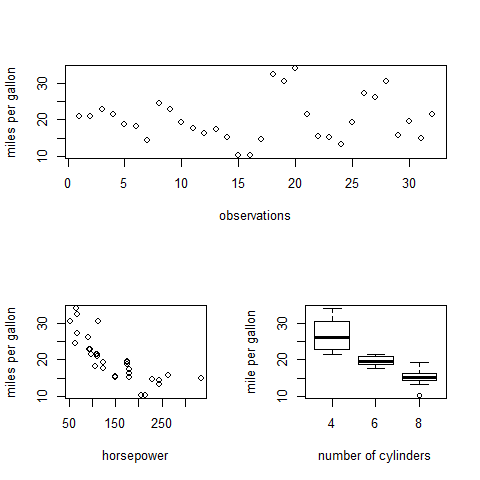
# view
matrix(c(1,2,1,3), 2, 2, byrow = TRUE)
## [,1] [,2]
## [1,] 1 2
## [2,] 1 3
layout(matrix(c(1,2,1,3), 2, 2, byrow = TRUE))
hist(wt)
hist(mpg)
hist(disp)
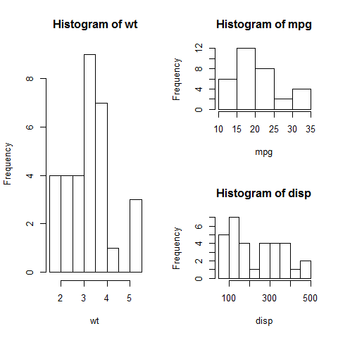
layout(matrix(c(1,1,2,3), 2, 2, byrow = TRUE), widths = c(3,1), heights = c(1,2))
hist(wt)
hist(mpg)
hist(disp)

nf <- layout(matrix(c(1,1,2,3), 2, 2, byrow = TRUE), widths = lcm(12), heights = lcm(6))
layout.show(nf)
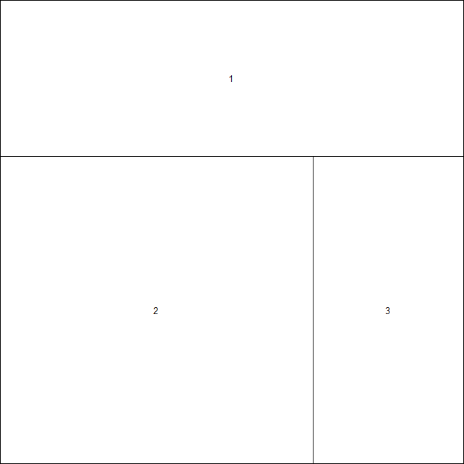
plot(mpg, xlab = 'observations', ylab = 'miles per gallon')
plot(hp, mpg, xlab = 'horsepower', ylab = 'miles per gallon')
boxplot(mpg ~ cyl, ylab = 'mile per gallon', xlab = 'number of cylinders')
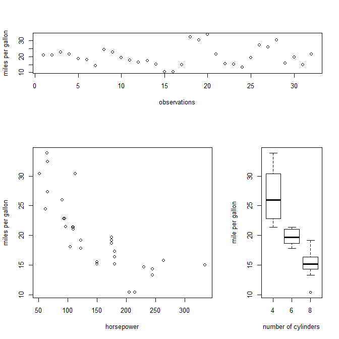
Gridview with additional packages.
library(vcd)
mplot(A, B, C)

See the lattice and latticeExtra packages for built-in
facet/gridview. ggplot2 as well.
Plot and add ablines
plot(hp, mpg, xlab = 'horsepower', ylab = 'miles per gallon')
# abline(h = yvalues, v = xvalues)
abline(lm(mpg ~ hp))
# main = 'Title' or...
title('Title')
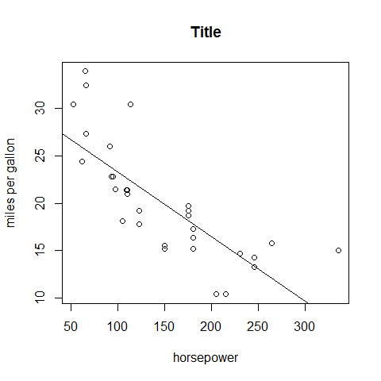
plot(hp, mpg, xlab = 'horsepower', ylab = 'miles per gallon')
abline(h = c(20, 25))
abline(v = c(50, 150))
abline(v = seq(200, 300, 50), lty = 2, col = 'blue')

Add a legend
boxplot(mpg ~ cyl, main = 'Title',
yaxt = 'n', xlab = 'mile per gallon', horizontal = TRUE, col = terrain.colors(3))
legend('topright', inset = 0.05, title = 'number of cylinders', c('4','6','8'), fill = terrain.colors(3), horiz = TRUE)

Save
mygraph <- plot(hp, mpg, main = 'Title', xlab = 'horsepower', ylab = 'miles per gallon')
pdf('mygraph.pdf')
png('mygraph.png')
jpeg('mygraph.jpg')
bmp('mygraph.bmp')
postscript('mygraph.ps')
View in a new window
Typing the function will open a new window to render the plot.
windows()for Windows.X11()for Linux.quartz()for OS X.
# open the new windows
windows()
plot(hp, mpg, main = 'Title', xlab = 'horsepower', ylab = 'miles per gallon')
Enrich the plot, add text
plot(hp, mpg,
main = 'Title', col.main = 'blue',
sub = 'figure 1', col.sub = 'blue',
xlab = 'horsepower',
ylab = 'miles per gallon',
col.lab = 'red', cex.lab = 0.9,
xlim = c(50, 350),
ylim = c(0, 40))
text(100, 10, 'text 1') # x and y coordinate
mtext('text 2', 4, line = 0.5) # pos = 1 (bottom), 2 (left), 3 (top), 4 (right); line (margin)
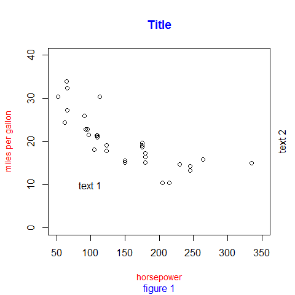
With locator(), use the mouse; with 1 for 1 click, 2 for… Find the
coordinates to be entered in the code. For example (after two clicks):
> locator(2)
$x
[1] 212.5308 293.7854
$y
[1] 33.34040 31.87281
plot(hp, mpg,
main = 'Title',
xlab = 'horsepower',
ylab = 'miles per gallon')
text(hp, mpg, row.names(mtcars), cex = 0.7, pos = 4, col = 'red')
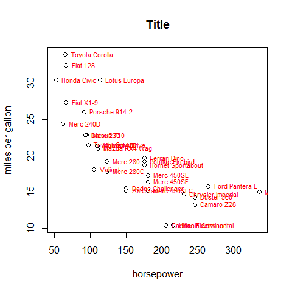
Enrich the plot, add symbols
plot(hp, mpg,
main = 'Title',
xlab = 'horsepower',
ylab = 'miles per gallon')
symbols(250, 20, squares = 1, add = TRUE, inches = 0.1, fg = 'red')
symbols(250, 25, circles = 1, add = TRUE, inches = 0.1, fg = 'red')
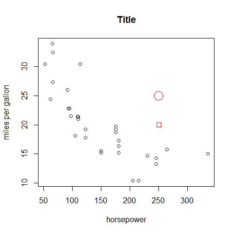
#rectangles
#stars
#thermometers
#boxplots
Combine plots; change pch = & col =
par(mfrow = c(2,2))
# 1
plot(hp, mpg,
main = 'P1',
xlab = 'horsepower',
ylab = 'miles per gallon',
pch = 1,
col = 'black')
# 2
plot(hp, mpg,
main = 'P2',
xlab = 'horsepower',
ylab = 'miles per gallon',
pch = 3,
col = 'blue',
cex = 0.5)
# 3
plot(hp, mpg,
main = 'P3',
xlab = 'horsepower',
ylab = 'miles per gallon',
pch = 5,
col = 'red',
cex = 2)
# 4
plot(hp, mpg,
main = 'P4',
xlab = 'horsepower',
ylab = 'miles per gallon',
pch = 7,
col = 'green')
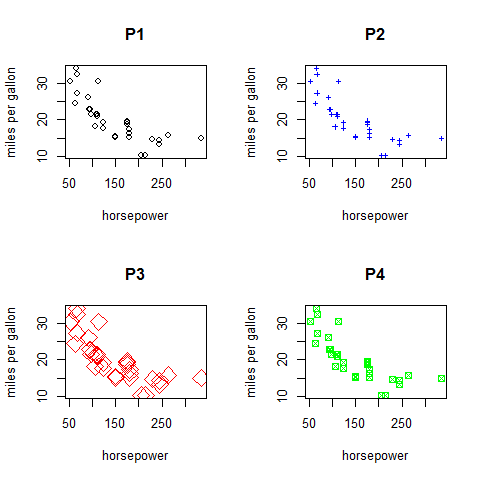
# reverse
par(mfrow = c(1,1))
Change col =

Change pch =

par(fig = c(0,0.8,0,0.8))
plot(mtcars$wt, mtcars$mpg, xlab = 'Car Weight', ylab = 'miles Per Gallon')
par(fig = c(0,0.8,0.55,1), new = TRUE)
boxplot(mtcars$wt, horizontal = TRUE, axes = FALSE)
par(fig = c(0.65,1,0,0.8), new = TRUE)
boxplot(mtcars$mpg, axes = FALSE)
mtext('Enhanced Scatterplot', side = 3, outer = TRUE, line = -3)
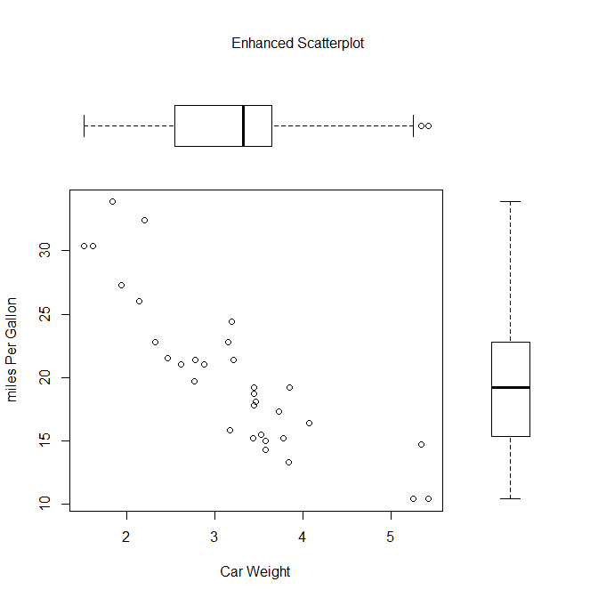
# reverse
par(mfrow = c(1,1))
Change type =; without dots
x <- c(1:5); y <- x
par(pch = 22, col = 'red') # plotting symbol and color
par(mfrow = c(2,4)) # all plots on one page
opts = c('p','l','o','b','c','s','S','h')
for (i in 1:length(opts)) {
heading = paste('type =',opts[i])
plot(x, y, type = 'n', main = heading)
lines(x, y, type = opts[i])
}
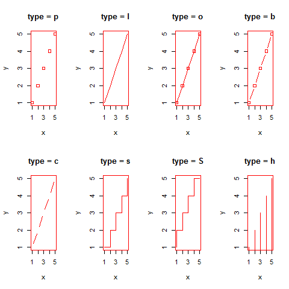
# reverse
par(mfrow = c(1,1), col = 'black')
Change type =; with dots
x <- c(1:5); y <- x
par(pch = 22, col = 'blue') # plotting symbol and color
par(mfrow = c(2,4)) # all plots on one page
opts = c('p','l','o','b','c','s','S','h')
for (i in 1:length(opts)) {
heading = paste('type =',opts[i])
plot(x, y, main = heading)
lines(x, y, type = opts[i])
}

# reverse
par(mfrow = c(1,1), col = 'black')
Add or modify the axes
plot(hp, mpg,
main = 'Title',
xlab = 'horsepower',
ylab = 'miles per gallon',
xaxt = 'n',
yaxt = 'n')
axis(1, at = c(100, 200, 300), labels = NULL, pos = 15, lty = 'dashed', col = 'green', las = 2, tck = -0.05)
axis(4, at = c(20, 30), labels = c('bt', 'up'), pos = 125, lty = 'dashed', col = 'blue', las = 2, tck = -0.05)

# reverse
par(las = 1)
Add layers to the first plot
plot(mpg,
main = 'Title',
xlab = 'horsepower',
ylab = 'miles per gallon')
# add lines
lines(mpg[1:10], type = 'l', col = 'green')

Univariate Plots¶
Plot; continuous
plot(mpg, main = 'Title', xlab = 'observations', ylab = 'miles per gallon')

Plot; categorical
plot(cyl, main = 'Title', xlab = 'observations', ylab = 'cylinders')

QQnorm; continuous
qqnorm(mpg, main = 'Title', xlab = 'observations', ylab = 'cylinders')
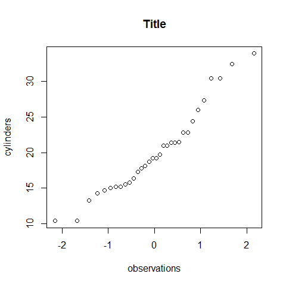
QQnorm; categorical
qqnorm(cyl, main = 'Title', xlab = 'observations', ylab = 'cylinders')

Stripchart; continuous
stripchart(mpg, main = 'Title', xlab = 'miles per gallon')
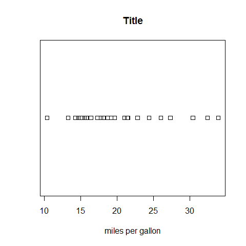
Stripchart; categorical
stripchart(cyl, main = 'Title', xlab = 'cylinders')
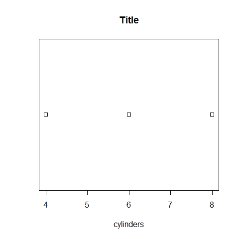
Barplot (vertical); continuous
barplot(mpg[1:10], main = 'Title', xlab = 'observations', ylab = 'miles per gallon')

Barplot (horizontal); categorical
barplot(cyl[1:10], main = 'Title', horiz = TRUE, xlab = 'cylinders', ylab = 'observations')
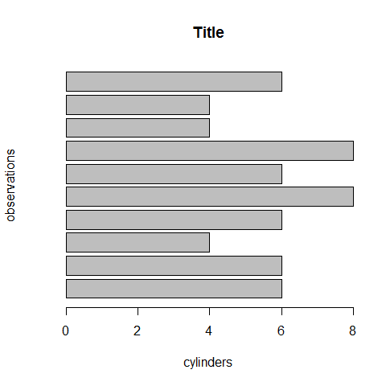
Barplots options
Group with table().
counts <- table(cyl)
counts
## cyl
## 4 6 8
## 11 7 14
barplot(counts, main = 'Title', horiz = TRUE, xlab = 'count', names.arg = c('4 Cyl', '6 Cyl', '8 Cyl'))

counts <- table(vs, gear)
counts
## gear
## vs 3 4 5
## 0 12 2 4
## 1 3 10 1
barplot(counts, main = 'Title', xlab = 'gearbox', col = c('darkblue', 'red'), legend = rownames(counts))
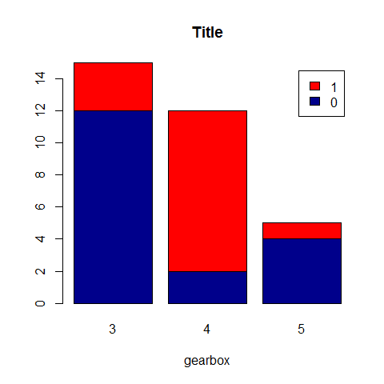
counts <- table(vs, gear)
counts
## gear
## vs 3 4 5
## 0 12 2 4
## 1 3 10 1
barplot(counts, main = 'Title', xlab='gearbox', col = c('darkblue', 'red'), legend = rownames(counts), beside = TRUE)
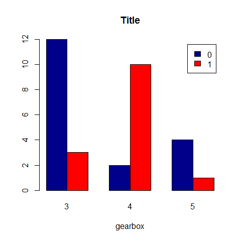
Group with aggregate().
aggregate(mtcars, by = list(cyl, vs), FUN = mean, na.rm = TRUE)
## Group.1 Group.2 mpg cyl disp hp drat wt qsec
## 1 4 0 26.00000 4 120.30 91.0000 4.430000 2.140000 16.70000
## 2 6 0 20.56667 6 155.00 131.6667 3.806667 2.755000 16.32667
## 3 8 0 15.10000 8 353.10 209.2143 3.229286 3.999214 16.77214
## 4 4 1 26.73000 4 103.62 81.8000 4.035000 2.300300 19.38100
## 5 6 1 19.12500 6 204.55 115.2500 3.420000 3.388750 19.21500
## vs am gear carb
## 1 0 1.0000000 5.000000 2.000000
## 2 0 1.0000000 4.333333 4.666667
## 3 0 0.1428571 3.285714 3.500000
## 4 1 0.7000000 4.000000 1.500000
## 5 1 0.0000000 3.500000 2.500000
par(las = 2) # make label text perpendicular to axis
par(mar = c(5, 8, 4, 2)) # increase y-axis margin.
counts <- table(mtcars$gear)
barplot(counts, main = 'Car Distribution', horiz = TRUE, names.arg = c('3 Gears', '4 Gears', '5 Gears'), cex.names = 0.8)
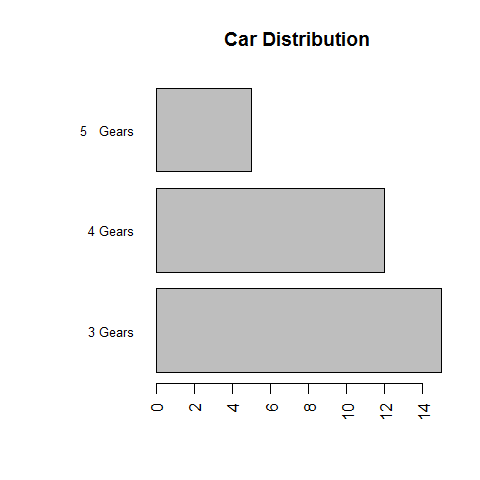
# reverse
par(las = 1)
Colors.
library(RColorBrewer)
par(mfrow = c(2, 1))
barplot(iris$Petal.Length)
barplot(table(iris$Species, iris$Sepal.Length), col = brewer.pal(3, 'Set1'))
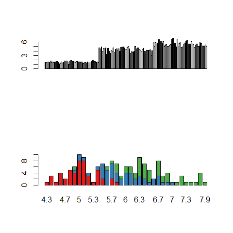
par(mfrow = c(1, 1))
Pie Chart
Avoid!
Dotchart; continuous
dotchart(mpg, main = 'Title', xlab = 'miles per gallon', ylab = 'observations')
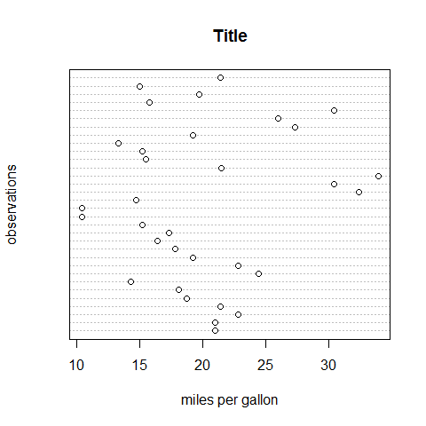
Dotchart; categorical
dotchart(cyl, main = 'Title', xlab = 'cylinders', ylab = 'observations')
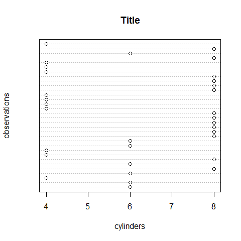
Dotchart options
dotchart(mpg,labels = row.names(mtcars), cex = 0.7, main = 'Title', xlab = 'miles per gallon')
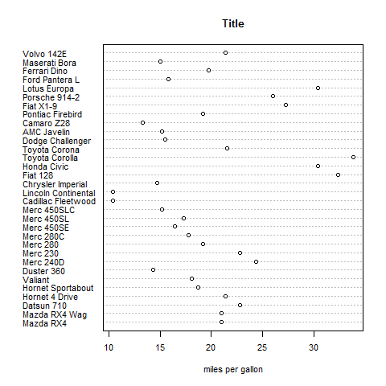
# sort by mpg
x <- mtcars[order(mpg),]
# must be factors
x$cyl <- factor(x$cyl)
x$color[x$cyl == 4] <- 'red'
x$color[x$cyl == 6] <- 'blue'
x$color[x$cyl == 8] <- 'darkgreen'
dotchart(x$mpg, labels = row.names(x), cex = 0.7, groups = x$cyl, main = 'Title', xlab = 'miles per gallon', gcolor = 'black', color = x$color)
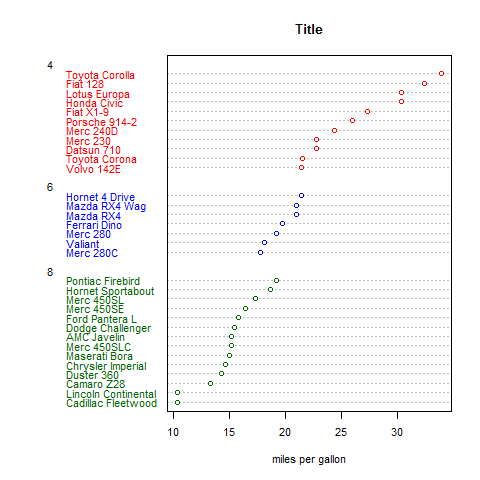
More with the hmisc package and panel.dotplot() and in the lattice
package section.
Boxplot; continuous
boxplot(mpg, main = 'Title', xlab = 'miles per gallon', ylab = 'observations')
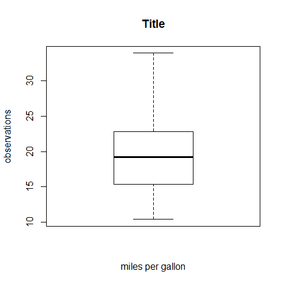
Stem; continuous
stem(mpg)
##
## The decimal point is at the |
##
## 10 | 44
## 12 | 3
## 14 | 3702258
## 16 | 438
## 18 | 17227
## 20 | 00445
## 22 | 88
## 24 | 4
## 26 | 03
## 28 |
## 30 | 44
## 32 | 49
Histogram; continuous
hist(mpg, main = 'Title', xlab = 'miles per gallon - bins', ylab = 'count')

Histogram; categorical
hist(cyl, main = 'Title', xlab = 'cylinders - bins', ylab = 'count')

Histogram options
hist(mpg, breaks = 12, col = 'red')
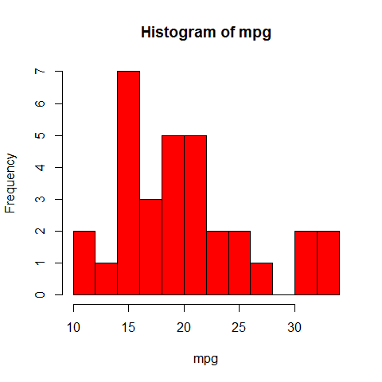
x <- mpg
h <- hist(x, breaks = 10, main = 'Title', xlab = 'miles per gallon')
xfit <- seq(min(x), max(x),length = 40)
yfit <- dnorm(xfit, mean = mean(x), sd = sd(x))
yfit <- yfit*diff(h$mids[1:2])*length(x)
lines(xfit, yfit, col = 'blue', lwd = 2)
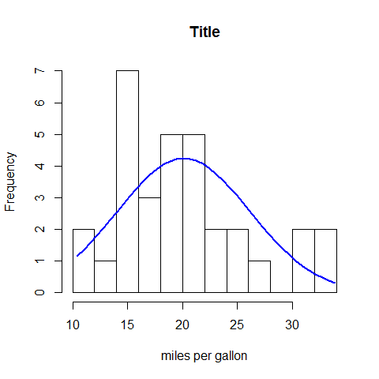
Colors.
library(RColorBrewer)
par(mfrow = c(2, 3))
hist(VADeaths, breaks = 10, col = brewer.pal(3, 'Set3'), main = '3, Set3')
hist(VADeaths, breaks = 4, col = brewer.pal(3, 'Set2'), main = '3, Set2')
hist(VADeaths, breaks = 8, col = brewer.pal(3, 'Set1'), main = '3, Set1')
hist(VADeaths, breaks = 2, col = brewer.pal(8, 'Set3'), main = '8, Set3')
hist(VADeaths, breaks = 10, col = brewer.pal(8, 'Greys'), main = '8, Greys')
hist(VADeaths, breaks = 10, col = brewer.pal(8, 'Greens'), main = '8, Greens')
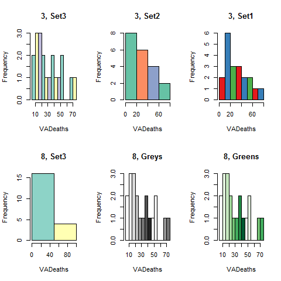
par(mfrow = c(1, 1))
Density Plot; continuous
plot(density(mpg), main = 'Title')

plot(density(mpg), main = 'Title')
polygon(density(mpg), col = 'red', border = 'blue')
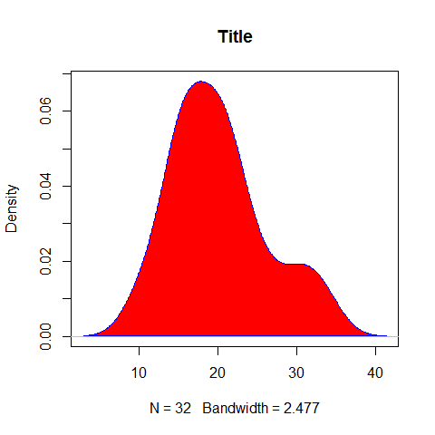
d1 <- density(mtcars$mpg)
plot(d1)
rug(mtcars$mpg)
lines(density(mtcars$mpg, d1$bw/2), col = 'green')
lines(density(mtcars$mpg, d1$bw/5), col = 'blue')

Bivariate (Multivariate) Plots¶
Plot, continuous/continuous
plot(mpg, hp, main = 'Title', xlab = 'miles per gallon', ylab = 'horsepowers')

Plot, continuous/categorical
plot(mpg, cyl, main = 'Title', xlab = 'miles per gallon', ylab = 'cylinders')
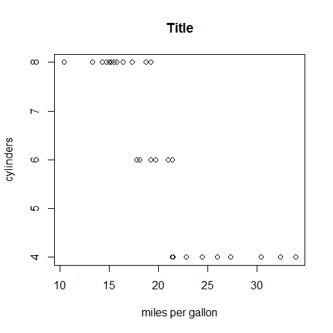
Plot options
plot(wt, mpg, main = 'Title', xlab = 'weight', ylab = 'miles per gallon ')
abline(lm(mpg ~ wt), col = 'red') # regression
lines(lowess(wt, mpg), col = 'blue') # lowess line
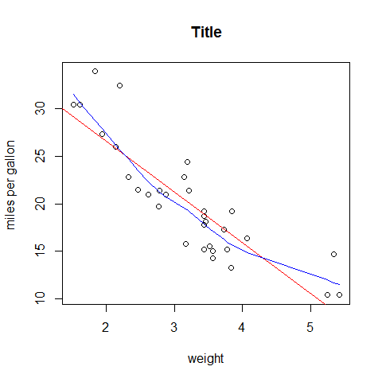
SmoothScatter; continuous/continuous
smoothScatter(mpg, hp, main = 'Title', xlab = 'miles per gallon', ylab = 'horsepowers')
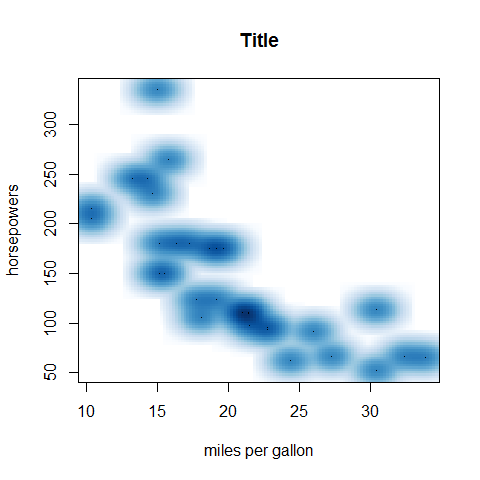
Sunflowerplot; categorical/categorical
Special symbols at each location: one observation = one dot; more
observations = cross, star, etc.
sunflowerplot(gear, cyl, main = 'Title', xlab = 'gearbox', ylab = 'cylinders')
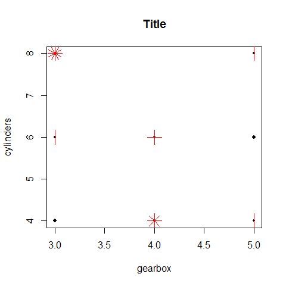
Boxplot
boxplot(mpg ~ cyl, main = 'Title', xlab = 'cylinders', ylab = 'miles per gallon')

Colors.
library(RColorBrewer)
par(mfrow = c(1, 2))
boxplot(iris$Sepal.Length, col = 'red')
boxplot(iris$Sepal.Length ~ iris$Species, col = topo.colors(3))
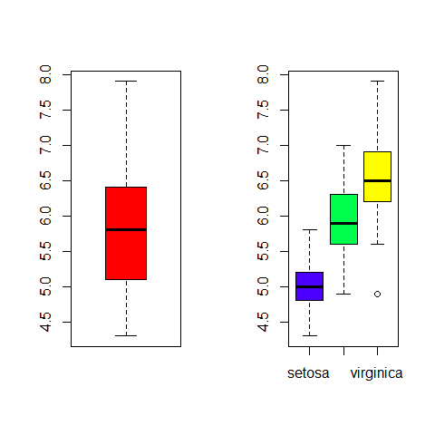
par(mfrow = c(1, 1))
library(dplyr)
data(Pima.tr2, package = 'MASS')
PimaV <- select(Pima.tr2, glu:age)
boxplot(scale(PimaV), pch = 16, outcol = 'red')
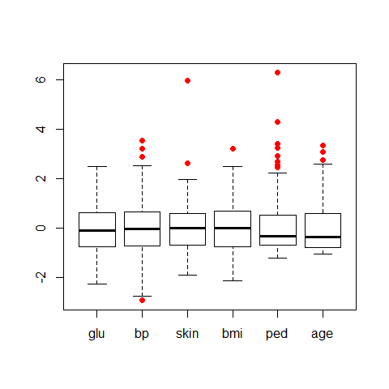
Boxplot options
four <- subset(mpg, cyl == 4)
six <- subset(mpg, cyl == 6)
eight <- subset(mpg, cyl == 8)
boxplot(four, six, eight, main = 'Title', ylab = 'miles per gallon')
axis(1, at = c(1, 2, 3), labels = c('4 Cyl', '6 Cyl', '8 Cyl'))

Dotchart
counts <- table(gear, cyl)
counts
## cyl
## gear 4 6 8
## 3 1 2 12
## 4 8 4 0
## 5 2 1 2
dotchart(counts, main = 'Title', xlab = 'count', ylab = 'cylinders/gearbox')
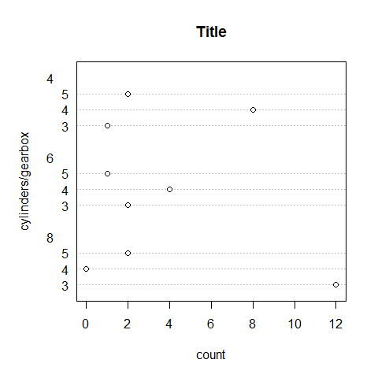
counts <- table(cyl, gear)
counts
## gear
## cyl 3 4 5
## 4 1 8 2
## 6 2 4 1
## 8 12 0 2
dotchart(counts, main = 'Title', xlab = 'count', ylab = 'gearbox/cylinders')
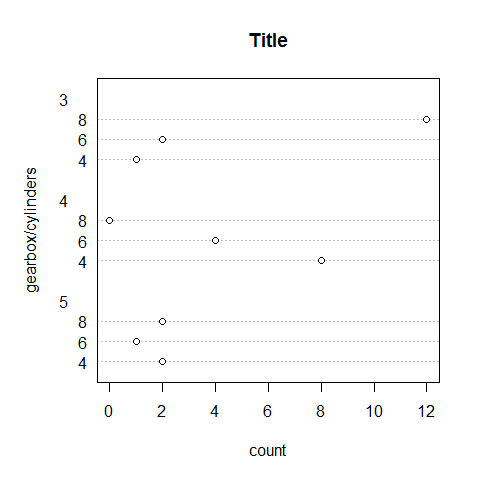
Barplot with its options
Vertical or horizontal. The legend as well can be horizontal or
vertical.
counts <- table(gear, cyl)
counts
## cyl
## gear 4 6 8
## 3 1 2 12
## 4 8 4 0
## 5 2 1 2
barplot(counts, main = 'Title', xlab = 'cylinders', ylab = 'count', ylim = c(0, 20), col = terrain.colors(3))
legend('topleft', inset = .04, title = 'gearbox',
c('3','4','5'), fill = terrain.colors(3), horiz = TRUE)
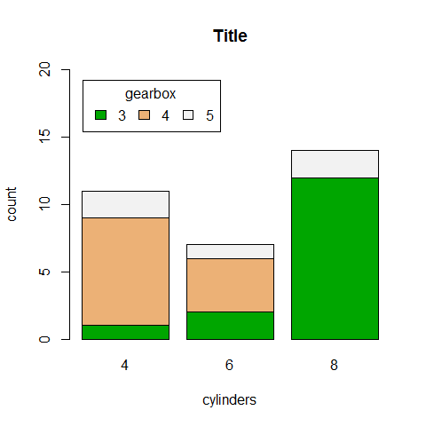
counts <- table(gear, cyl)
counts
## cyl
## gear 4 6 8
## 3 1 2 12
## 4 8 4 0
## 5 2 1 2
barplot(counts, main = 'Title', xlab = 'cylinders', ylab = 'count', ylim = c(0, 25), col = terrain.colors(3), legend = rownames(counts))
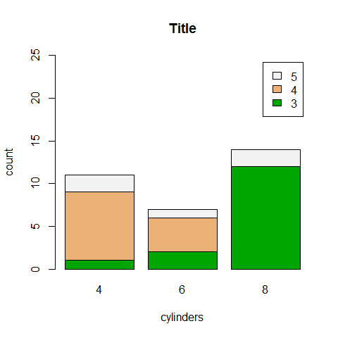
counts <- table(gear, cyl)
counts
## cyl
## gear 4 6 8
## 3 1 2 12
## 4 8 4 0
## 5 2 1 2
barplot(counts, main = 'Title', xlab = 'cylinders', ylab = 'count', ylim = c(0, 20), col = terrain.colors(3), legend = rownames(counts), beside = TRUE)
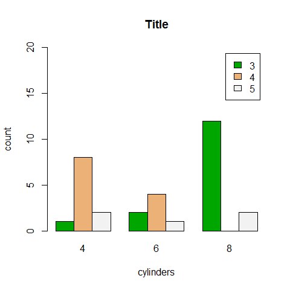
Spineplot
‘Count’ = blocks; categorical (with factors).
cyl2 <- as.factor(cyl) # mandatory for the y
gear2 <- as.factor(gear)
spineplot(gear2, cyl2, main = 'Title', xlab = 'gearbox', ylab = 'cylinders')
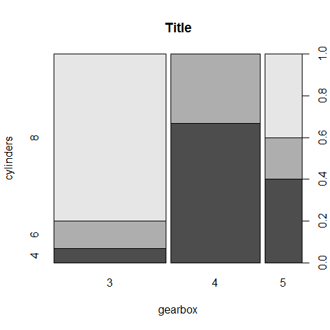
Count = blocks; continuous.
spineplot(mpg, cyl2, main = 'Title', xlab = 'miles per gallon', ylab = 'cylinders')
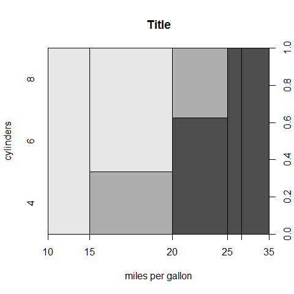
Mosaicplot
Count = blocks.
counts <- table(gear, cyl)
counts
## cyl
## gear 4 6 8
## 3 1 2 12
## 4 8 4 0
## 5 2 1 2
mosaicplot(counts, main = 'Title', xlab = 'gearbox', ylab = 'cylinders')
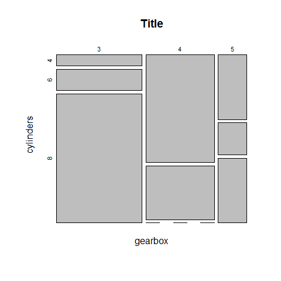
Multivariate Plots¶
Pairs
pairs( ~mpg + disp + hp)
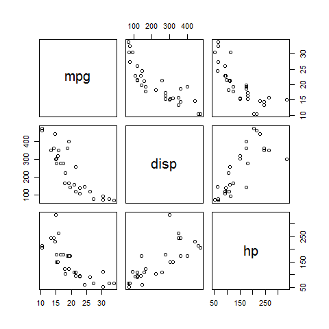
Coplot
coplot(mpg ~ hp | wt)

Correlograms
library(corrgram)
corrgram(mtcars, order = TRUE, lower.panel = panel.shade, upper.panel=panel.pie, text.panel = panel.txt, main = 'Car Milage Data in PC2/PC1 Order')
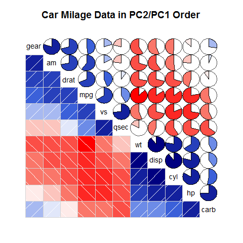
Plot a dataset with colors
library(RColorBrewer)
plot(iris, col = brewer.pal(3, 'Set1'))
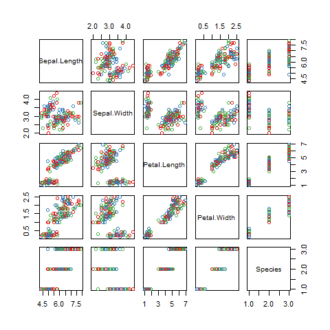
Stars
The star branches are explanatory; be careful with the interpretation!
Well-advised for visual and pattern exploration.
mtcars[1:4, c(1, 4, 6)]
## mpg hp wt
## Mazda RX4 21.0 110 2.620
## Mazda RX4 Wag 21.0 110 2.875
## Datsun 710 22.8 93 2.320
## Hornet 4 Drive 21.4 110 3.215
stars(mtcars[1:4, c(1, 4, 6)])
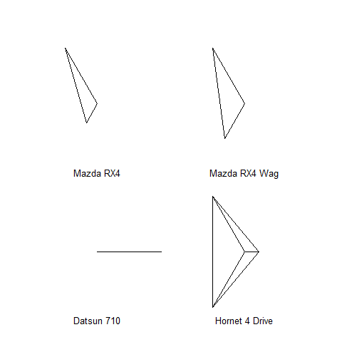
Trivariate plots
image().contour().filled.contour().persp().symbols().
Times Series¶
Add packages: zoo and xts.
Basics
plot(AirPassengers, type = 'l')

Change the type =
y1 <- rnorm(100)
par(mfrow = c(2, 1))
plot(y1, type = 'p', main = 'p vs l')
plot(y1, type = 'l')
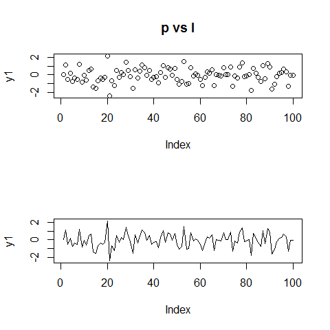
plot(y1, type = 'l', main = 'l vs h')
plot(y1, type = 'h')
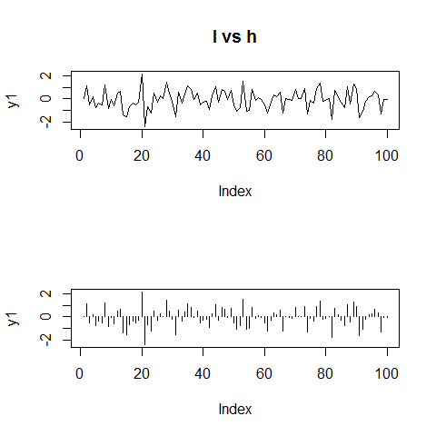
plot(y1, type = 'l', lty = 3, main = 'l 3 vs o')
plot(y1, type = 'o')

plot(y1, type = 'b', main = 'b vs c')
plot(y1, type = 'c')
plot(y1, type = 's', main = 's vs S')
plot(y1, type = 'S')
# reverse
par(mfrow = c(1, 1))
Add a box
y1 <- rnorm(100)
y2 <- rnorm(100)
par(mfrow = (c(2, 1)))
plot(y1, type = 'l', axes = FALSE, xlab = '', ylab = '', main = '')
box(col = 'gray')
lines(x = c(20, 20, 40, 40), y = c(-7, max(y1), max(y1), -7), lwd = 3, col = 'gray')
plot(y2, type = 'l', axes = FALSE, xlab = '', ylab = '', main = '')
box(col = 'gray')
lines(x = c(20, 20, 40, 40), y = c(7, min(y2), min(y2), 7), lwd = 3, col = 'gray')
# reverse
par(mfrow = c(1,1))
Add lines and text within the plot
y1 <- rnorm(100)
# x goes from 0 to 100
# xaxt = 'n' remove the x ticks
plot(y1, type = 'l', lwd = 2, lty = 'longdash', main = 'Title', ylab = 'y', xlab = 'time', xaxt = 'n')
abline(h = 0, lty = 'longdash')
abline(v = 20, lty = 'longdash')
abline(v = 50, lty = 'longdash')
abline(v = 95, lty = 'longdash')
text(17, 1.5, srt = 90, adj = 0, labels = 'Tag 1', cex = 0.8)
text(47, 1.5, srt = 90, adj = 0, labels = 'Tag a', cex = 0.8)
text(92, 1.5, srt = 90, adj = 0, labels = 'Tag alpha', cex = 0.8)

A comprehensive example
# new data
head(Orange)
## Tree age circumference
## 1 1 118 30
## 2 1 484 58
## 3 1 664 87
## 4 1 1004 115
## 5 1 1231 120
## 6 1 1372 142
# convert factor to numeric for convenience
Orange$Tree <- as.numeric(Orange$Tree)
ntrees <- max(Orange$Tree)
# get the range for the x and y axis
xrange <- range(Orange$age)
yrange <- range(Orange$circumference)
# set up the plot
plot(xrange, yrange, type = 'n', xlab = 'Age (days)',
ylab = 'Circumference (mm)' )
colors <- rainbow(ntrees)
linetype <- c(1:ntrees)
plotchar <- seq(18, 18 + ntrees, 1)
# add lines
for (i in 1:ntrees) {
tree <- subset(Orange, Tree == i)
lines(tree$age, tree$circumference, type = 'b', lwd = 1.5,
lty = linetype[i], col = colors[i], pch = plotchar[i])
}
# add a title and subtitle
title('Tree Growth', 'example of line plot')
# add a legend
legend(xrange[1], yrange[2], 1:ntrees, cex = 0.8, col = colors,
pch = plotchar, lty = linetype, title = 'Tree')

Change lty =

Regressions and Residual Plots¶
# first
regr <- lm(mpg ~ hp)
summary(regr)
##
## Call:
## lm(formula = mpg ~ hp)
##
## Residuals:
## Min 1Q Median 3Q Max
## -5.7121 -2.1122 -0.8854 1.5819 8.2360
##
## Coefficients:
## Estimate Std. Error t value Pr(>|t|)
## (Intercept) 30.09886 1.63392 18.421 < 2e-16 ***
## hp -0.06823 0.01012 -6.742 1.79e-07 ***
## ---
## Signif. codes: 0 '***' 0.001 '**' 0.01 '*' 0.05 '.' 0.1 ' ' 1
##
## Residual standard error: 3.863 on 30 degrees of freedom
## Multiple R-squared: 0.6024, Adjusted R-squared: 0.5892
## F-statistic: 45.46 on 1 and 30 DF, p-value: 1.788e-07
plot(mpg ~ hp)
abline(regr)
par(mfrow = c(2, 2))
# then
plot(regr)
# reverse
par(mfrow = c(1, 1))
The lattice and latticeExtra Packages¶
library(lattice)
Coloring¶
# Show the default settings
show.settings()
# Save the default theme
mytheme <- trellis.par.get()
# Turn the B&W
trellis.par.set(canonical.theme(color = FALSE))
show.settings()
Documentation¶
A note on reordering the levels (factors)¶
# start
cyl <- mtcars$cyl
cyl <- as.factor(cyl)
cyl
## [1] 6 6 4 6 8 6 8 4 4 6 6 8 8 8 8 8 8 4 4 4 4 8 8 8 8 4 4 4 8 6 8 4
## Levels: 4 6 8
levels(cyl)
## [1] "4" "6" "8"
# option 1
cyl <- factor(cyl, levels = c('8', '6', '4'))
# or levels = 3:1
# or levels = letters[3:1]
levels(cyl)
## [1] "8" "6" "4"
cyl <- mtcars$cyl
cyl <- as.factor(cyl)
# option 2
cyl <- reorder(cyl, new.order = 3:1)
levels(cyl)
## [1] "8" "6" "4"
library(lattice)
# normalized x-axis for comparison
barchart(Class ~ Freq | Sex + Age, data = as.data.frame(Titanic), groups = Survived, stack = TRUE, layout = c(4, 1), auto.key = list(title = 'Survived', columns = 2))
# free x-axis
barchart(Class ~ Freq | Sex + Age, data = as.data.frame(Titanic), groups = Survived, stack = TRUE, layout = c(4, 1), auto.key = list(title = 'Survived', columns = 2), scales = list(x = 'free'))

# or
bc.titanic <- barchart(Class ~ Freq | Sex + Age, data = as.data.frame(Titanic), groups = Survived, stack = TRUE, layout = c(4, 1), auto.key = list(title = 'Survived', columns = 2), scales = list(x = 'free'))
bc.titanic
# add bg grid
update(bc.titanic, panel = function(...) {
panel.grid(h = 0, v = -1)
panel.barchart(...)
})

# remove lines
update(bc.titanic, panel = function(...) {
panel.barchart(..., border = 'transparent')
})
# or
update(bc.titanic, border = 'transparent')

Titanic1 <- as.data.frame(as.table(Titanic[, , 'Adult' ,]))
Titanic1
## Class Sex Survived Freq
## 1 1st Male No 118
## 2 2nd Male No 154
## 3 3rd Male No 387
## 4 Crew Male No 670
## 5 1st Female No 4
## 6 2nd Female No 13
## 7 3rd Female No 89
## 8 Crew Female No 3
## 9 1st Male Yes 57
## 10 2nd Male Yes 14
## 11 3rd Male Yes 75
## 12 Crew Male Yes 192
## 13 1st Female Yes 140
## 14 2nd Female Yes 80
## 15 3rd Female Yes 76
## 16 Crew Female Yes 20
barchart(Class ~ Freq | Sex, Titanic1, groups = Survived, stack = TRUE, auto.key = list(title = 'Survived', columns = 2))
Titanic2 <- reshape(Titanic1, direction = 'wide', v.names = 'Freq', idvar = c('Class', 'Sex'), timevar = 'Survived')
names(Titanic2) <- c('Class', 'Sex', 'Dead', 'Alive')
barchart(Class ~ Dead + Alive | Sex, Titanic2, stack = TRUE, auto.key = list(columns = 2))

Uni-, Bi-, Multivariate Plots¶
Barchart
Like barplot().
# y ~ x
barchart(mpg ~ hp, main = 'Title', xlab = 'horsepowers', ylab = 'miles per gallon')
# y ~ x
barchart(mpg ~ hp, main = 'Title', xlab = 'horsepowers', ylab = 'miles per gallon', horizontal = FALSE)
barchart(VADeaths, groups = FALSE, layout = c(1, 4), aspect = 0.7, reference =FALSE, main = 'Title', xlab = 'rate per 100')
data(postdoc, package = 'latticeExtra')
barchart(prop.table(postdoc, margin = 1), xlab = 'Proportion', auto.key = list(adj = 1))
Change layout = c(x, y, page)
barchart(mpg ~ hp | factor(cyl), main = 'Title', xlab = 'horsepowers', ylab = 'cylinders - miles per gallon', layout = c(1,3))

barchart(mpg ~ hp | factor(cyl), main = 'Title', xlab = 'cylinders - horsepowers', ylab = 'miles per gallon', layout = c(3,1))
Change aspect = 1
1 for square.
barchart(mpg ~ hp | factor(cyl), main = 'Title', xlab = 'horsepowers', ylab = 'miles per gallon', layout = c(3,1), aspect = 1)
Colors
barchart(mpg ~ hp, group = cyl, auto.key = list(space = 'right'), main = 'Title', xlab = 'horsepowers', ylab = 'miles per gallon')

shingle(); control the ranges.equal.count(); grid.
Dotplot
Like dotchart().
dotplot(mpg, main = 'Title', xlab = 'miles per gallon')
dotplot(factor(cyl) ~ mpg, main = 'Title', xlab = 'miles per gallon', ylab = 'cylinders')
dotplot(factor(cyl) ~ mpg | factor(gear), main = 'Title', xlab = 'gearbox - miles per gallon', ylab = 'cylinders', layout = c(3,1))

dotplot(factor(cyl) ~ mpg | factor(gear), main = 'Title', xlab = 'miles per gallon', ylab = 'gearbox - cylinders', layout = c(1,3), aspect = 0.3)
dotplot(factor(cyl) ~ mpg | factor(gear), main = 'Title', xlab = 'miles per gallon', ylab = 'gearbox - cylinders', layout = c(1,3), aspect = 0.3, origin = 0)
dotplot(factor(cyl) ~ mpg | factor(gear), main = 'Title', xlab = 'miles per gallon', ylab = 'gearbox - cylinders', layout = c(1,3), aspect = 0.3, origin = 0, type = c('p', 'h'))
Set auto.key.
# maybe we'll want this later
old.pars <- trellis.par.get()
#trellis.par.set(superpose.symbol = list(pch = c(1,3), col = 12:14))
trellis.par.set(superpose.symbol = list(pch = c(1,3), col = 1))
# Optionally put things back how they were
#trellis.par.set(old.pars)
Use auto.key.
dotplot(factor(cyl) ~ mpg | factor(gear), main = 'Title', xlab = 'miles per gallon', ylab = 'gearbox - cylinders', layout = c(1,3), groups = vs, auto.key = list(space = 'right'))
trellis.par.set(old.pars)
trellis.par.set(superpose.symbol = list(pch = c(1,3), col = 1))
dotplot(variety ~ yield | site, barley, layout = c(1, 6), aspect = c(0.7), groups = year, auto.key = list(space = 'right'))

trellis.par.set(old.pars)
Vertical.
dotplot(mpg ~ factor(cyl) | factor(gear), main = 'Title', xlab = 'cylinders', ylab = 'gearbox - miles per gallon', layout = c(1,3), aspect = 0.3)
library(readr)
density <- read_csv('density.csv')
density$Density <- as.numeric(density$Density)
dotplot(reorder(MetropolitanArea, Density) ~ Density, density, type = c('p', 'h'), main = 'Title', xlab = 'Population Density (pop / sq.mi)')
dotplot(reorder(MetropolitanArea, Density) ~ Density | Region, density, type = c('p', 'h'), strip = FALSE, strip.left = TRUE, layout = c(1, 3), scales = list(y = list(relation = 'free')), main = 'Title', xlab = 'Population Density (pop / sq.mi)')
Stripplot
Like stripchart().
stripplot(mpg, main = 'Title', xlab = 'miles per gallon')

stripplot(factor(cyl) ~ mpg, main = 'Title', xlab = 'miles per gallon', ylab = 'cylinders')

stripplot(factor(cyl) ~ mpg | factor(gear), main = 'Title', xlab = 'gearbox - miles per gallon', ylab = 'cylinders', layout = c(1,3))

stripplot(factor(cyl) ~ mpg | factor(gear), main = 'Title', xlab = 'gearbox - miles per gallon', ylab = 'cylinders', layout = c(1,3), groups = vs, auto.key = list(space = 'right'))
stripplot(mpg ~ factor(cyl) | factor(gear), main = 'Title', xlab = 'cylinders', ylab = 'gearbox - miles per gallon', layout = c(1,3))
Histogram
Like hist().
histogram(mpg, main = 'Title', xlab = 'miles per gallon')
histogram(~mpg | factor(cyl), layout = c(1, 3), main = 'Title', xlab = 'miles per gallon', ylab = 'density')

Densityplot
Like plot.density().
densityplot(mpg, main = 'Title', xlab = 'miles per gallon', ylab = 'density')
densityplot(~mpg | factor(cyl), layout = c(1, 3), main = 'Title', xlab = 'miles per gallon', ylab = 'density')

ECDFplot
library(latticeExtra)
ecdfplot(mpg, main = 'Title', xlab = 'miles per gallon', ylab = '')
BWplot
Like boxplot.
bwplot(mpg, main = 'Title', xlab = 'miles per gallon', ylab = 'density')

bwplot(factor(cyl) ~ mpg, main = 'Title', xlab = 'miles per gallon', ylab = 'cylinders')
bwplot(factor(cyl) ~ mpg | factor(gear), main = 'Title', xlab = 'miles per gallon', ylab = 'gearbox - cylinders', layout = c(1,3))

bwplot(mpg ~ factor(cyl) | factor(gear), main = 'Title', xlab = 'gearbox - cylinders', ylab = 'miles per gallon', layout = c(3,1))

QQmath
Like qqnorm().
qqmath(mpg, main = 'Title', ylab = 'miles per gallon')

XYplot
Like plot().
xyplot(mpg ~ disp | factor(cyl), main = 'Title', xlab = 'horsepower', ylab = 'cylinders - miles per gallon', layout = c(1,3))

xyplot(mpg ~ disp | factor(cyl), main = 'Title', xlab = 'cylinder - horsepowers', ylab = 'miles per gallon', layout = c(3,1))
XYplot options
xyplot(mpg ~ disp | factor(cyl), main = 'Title', xlab = 'cylinder - horsepowers', ylab = 'miles per gallon', layout = c(3,1), aspect = 1)

xyplot(mpg ~ disp | factor(cyl), main = 'Title', xlab = 'cylinder - horsepowers', ylab = 'miles per gallon', layout = c(3,1), aspect = 1, scales = list(y = list(at = seq(10, 30, 10))))
meanmpg <- mean(mpg)
xyplot(mpg ~ disp | factor(cyl), main = 'Title', xlab = 'cylinder - horsepowers', ylab = 'miles per gallon', layout = c(3,1), aspect = 1, panel = function(...) {
panel.xyplot(...)
panel.abline(h = meanmpg, lty = 'dashed')
panel.text(450, meanmpg + 1, 'avg', adj = c(1, 0), cex = 0.7)
})

xyplot(mpg ~ disp | factor(cyl), main = 'Title', xlab = 'cylinder - horsepowers', ylab = 'miles per gallon', layout = c(3,1), aspect = 1, panel = function(x, y, ...) {
panel.lmline(x, y)
panel.xyplot(x, y, ...)
})

panel.points().panel.lines().panel.segments().panel.arrows().panel.rect().panel.polygon().panel.text().panel.abline().panel.lmline().panel.xyplot().panel.curve().panel.rug().panel.grid().panel.bwplot().panel.histogram().panel.loess().panel.violin().panel.smoothScatter().- …
par.settings.- …
library(lattice)
data(SeatacWeather, package = 'latticeExtra')
xyplot(min.temp + max.temp + precip ~ day | month, ylab = 'Temperature and Rainfall', data = SeatacWeather, layout = c(3,1), type = 'l', lty = 1, col = 'black')

xyplot(min.temp + max.temp + precip ~ day | month, ylab = 'Temperature and Rainfall', data = SeatacWeather, layout = c(3,1), type = 'p', lty = 1, col = 'black')

xyplot(min.temp + max.temp + precip ~ day | month, ylab = 'Temperature and Rainfall', data = SeatacWeather, layout = c(3,1), type = 'l', lty = 1, col = 'black')

xyplot(min.temp + max.temp + precip ~ day | month, ylab = 'Temperature and Rainfall', data = SeatacWeather, layout = c(3,1), type = 'o', lty = 1, col = 'black')

xyplot(min.temp + max.temp + precip ~ day | month, ylab = 'Temperature and Rainfall', data = SeatacWeather, layout = c(3,1), type = 'r', lty = 1, col = 'black')

xyplot(min.temp + max.temp + precip ~ day | month, ylab = 'Temperature and Rainfall', data = SeatacWeather, layout = c(3,1), type = 'g', lty = 1, col = 'black')

xyplot(min.temp + max.temp + precip ~ day | month, ylab = 'Temperature and Rainfall', data = SeatacWeather, layout = c(3,1), type = 's', lty = 1, col = 'black')
xyplot(min.temp + max.temp + precip ~ day | month, ylab = 'Temperature and Rainfall', data = SeatacWeather, layout = c(3,1), type = 'S', lty = 1, col = 'black')

xyplot(min.temp + max.temp + precip ~ day | month, ylab = 'Temperature and Rainfall', data = SeatacWeather, layout = c(3,1), type = 'h', lty = 1, col = 'black')
xyplot(min.temp + max.temp + precip ~ day | month, ylab = 'Temperature and Rainfall', data = SeatacWeather, layout = c(3,1), type = 'a', lty = 1, col = 'black')

xyplot(min.temp + max.temp + precip ~ day | month, ylab = 'Temperature and Rainfall', data = SeatacWeather, layout = c(3,1), type = 'smooth', lty = 1, col = 'black')
xyplot(mpg ~ hp, main = 'Title', xlab = 'horsepowers', ylab = 'miles per gallon')

xyplot(mpg ~ hp, main = 'Title', xlab = 'horsepowers', ylab = 'miles per gallon', type = 'o')

xyplot(mpg ~ hp, main = 'Title', xlab = 'horsepowers', ylab = 'miles per gallon', type = 'o', pch = 16, lty = 'dashed')

xyplot(mpg ~ hp, main = 'Title', xlab = 'horsepowers', ylab = 'miles per gallon')

data(USAge.df, package = 'latticeExtra')
xyplot(Population ~ Age | factor(Year), USAge.df, groups = Sex, type = c('l', 'g'), auto.key = list(points = FALSE, lines = TRUE, columns = 2), aspect = 'xy', ylab = 'Population (millions)', subset = Year %in% seq(1905, 1975, by = 10))

xyplot(Population ~ Year | factor(Age), USAge.df, groups = Sex, type = 'l', strip = FALSE, strip.left = TRUE, layout = c(1, 3), ylab = 'Population (millions)', auto.key = list(lines = TRUE, points = FALSE, columns = 2), subset = Age %in% c(0, 10, 20))
data(USCancerRates, package = 'latticeExtra')
xyplot(rate.male ~ rate.female | state, USCancerRates, aspect = 'iso', pch = '.', cex = 2, index.cond = function(x, y) { median(y - x, na.rm = TRUE) }, scales = list(log = 2, at = c(75, 150, 300, 600)), panel = function(...) {
panel.grid(h = -1, v = -1)
panel.abline(0, 1)
panel.xyplot(...)
},
xlab = 'a',
ylab = 'b')

data(biocAccess, package = 'latticeExtra')
baxy <- xyplot(log10(counts) ~ hour | month + weekday, biocAccess, type = c('p', 'a'), as.table = TRUE, pch = '.', cex = 2, col.line = 'black')
baxy
library(latticeExtra)
useOuterStrips(baxy)

xyplot(sunspot.year, aspect = 'xy', strip = FALSE, strip.left = TRUE, cut = list(number = 4, overlap = 0.05))
data(biocAccess, package = 'latticeExtra')
ssd <- stl(ts(biocAccess$counts[1:(24 * 30 *2)], frequency = 24), 'periodic')
xyplot(ssd, main = 'Title', xlab = 'Time (Days)')

Splom
splom(mtcars[c(1, 3, 6)], groups = cyl, data = mtcars, panel = panel.superpose, key = list(title = 'Three Cylinder Options', columns = 3, points = list(text = list(c('4 Cylinder', '6 Cylinder', '8 Cylinder')))))

trellis.par.set(superpose.symbol = list(pch = c(1,3, 22), col = 1, alpha = 0.5))
splom(~data.frame(mpg, disp, hp, drat, wt, qsec), data = mtcars, groups = cyl, pscales = 0, varnames = c('miles\nper\ngallon', 'displacement\n(cu.in(', 'horsepower', 'rear\naxle\nratio', 'weight', '1/4\nmile\ntime'), auto.key = list(columns = 3, title = 'Title'))
trellis.par.set(old.pars)
splom(USArrests)
splom(~USArrests[c(3,1,2,4)] | state.region, pscales = 0, type = c('g', 'p', 'smooth'))

Parallel plot
For multivariate continuous data.
parallelplot(~iris[1:4])
parallelplot(~iris[1:4], horizontal.axis = FALSE)

parallelplot(~iris[1:4], scales = list(x = list(rot = 90)))
parallelplot(~iris[1:4] | Species, iris)
parallelplot(~iris[1:4], iris, groups = Species,
horizontal.axis = FALSE, scales = list(x = list(rot = 90)))
Trivariate plots
Like image(), contour(), filled.contour(), persp(), symbols().
levelplot().contourplot().cloud().wireframe().
Additional Packages¶
The sm Package (density)¶
library(sm)
Density plot
# create value labels
cyl.f <- factor(cyl, levels = c(4, 6, 8), labels = c('4 cyl', '6 cyl', '8 cyl'))
# plot densities
sm.density.compare(mpg, cyl, xlab = 'miles per gallon')
title(main = 'Title')
# add legend via mouse click
colfill <- c(2:(2 + length(levels(cyl.f))))
legend(25, 0.19, levels(cyl.f), fill = colfill)
The car Package (scatter)¶
library(car)
Scatter plot
scatterplot(mpg ~ wt | cyl, data = mtcars, xlab = 'weight', ylab = 'miles per gallon', labels = row.names(mtcars))
Splom
scatterplotMatrix( ~mpg + disp + drat + wt | cyl, data = mtcars, main = 'Title')

scatterplotMatrix == spm.
spm( ~mpg + disp + drat + wt | cyl, data = mtcars, main = 'Title')

The vioplot Package (boxplot)¶
library(vioplot)
Violin boxplot
x1 <- mpg[mtcars$cyl == 4]
x2 <- mpg[mtcars$cyl == 6]
x3 <- mpg[mtcars$cyl == 8]
vioplot(x1, x2, x3, names = c('4 cyl', '6 cyl', '8 cyl'), col = 'green')
title('Title')

The vcd Package (count, correlation, mosaic)¶
library(vcd)
The package provides a variety of methods for visualizing multivariate
categorical data.
Count
counts <- table(gear, cyl)
counts
## cyl
## gear 8 6 4
## 3 12 2 1
## 4 0 4 8
## 5 2 1 2
mosaic(counts, shade = TRUE, legend = TRUE)

Correlation
counts <- table(gear, cyl)
counts
## cyl
## gear 8 6 4
## 3 12 2 1
## 4 0 4 8
## 5 2 1 2
assoc(counts, shade = TRUE)
Mosaic
ucb <- data.frame(UCBAdmissions)
ucb <- within(ucb, Accept <- factor(Admit, levels = c('Rejected', 'Admitted')))
library(vcd); library(grid)
doubledecker(xtabs(Freq~ Dept + Gender + Accept, data = ucb), gp = gpar(fill = c('grey90', 'steelblue')))

data(Fertility, package = 'AER')
doubledecker(morekids ~ age, data = Fertility, gp = gpar(fill = c('grey90', 'green')), spacing = spacing_equal(0))

doubledecker(morekids ~ gender1 + gender2, data = Fertility, gp = gpar(fill = c('grey90', 'green')))
doubledecker(morekids ~ age + gender1 + gender2, data = Fertility, gp = gpar(fill = c('grey90', 'green')), spacing = spacing_dimequal(c(0.1, 0, 0, 0)))
The hexbin Package (scatter)¶
library(hexbin)
Scatter plot
# new data
data(NHANES)
# compare
plot(Serum.Iron ~ Transferin, NHANES, main = 'Title', xlab = 'Transferin', ylab = 'Iron')
# with
hexbinplot(Serum.Iron ~ Transferin, NHANES, main = 'Title', xlab = 'Transferin', ylab = 'Iron')

hexbinplot(mpg ~ hp, main = 'Title', xlab = 'horsepowers', ylab = 'miles per gallon')

x <- rnorm(1000)
y <- rnorm(1000)
bin <- hexbin(x, y, xbins = 50)
plot(bin, main = 'Title')

x <- rnorm(1000)
y <- rnorm(1000)
plot(x, y, main = 'Title', col = rgb(0, 100, 0, 50, maxColorValue = 255), pch = 16)

data(Diamonds, package = 'Stat2Data')
a = hexbin(Diamonds$PricePerCt, Diamonds$Carat, xbins = 40)
library(RColorBrewer)
plot(a)

Colors.
rf <- colorRampPalette(rev(brewer.pal(12, 'Set3')))
hexbinplot(Diamonds$PricePerCt ~ Diamonds$Carat, colramp = rf)
Mix lattice and hexbin
data(gvhd10, package = 'latticeExtra')
xyplot(asinh(SSC.H) ~ asinh(FL2.H), gvhd10, aspect = 1, panel = panel.hexbinplot, .aspect.ratio = 1, trans = sqrt)

xyplot(asinh(SSC.H) ~ asinh(FL2.H) | Days, gvhd10, aspect = 1, panel = panel.hexbinplot, .aspect.ratio = 1, trans =sqrt)
The car Package (scatter)¶
library(car)
Scatter plot
scatterplotMatrix(~mpg + disp + drat + wt | cyl, data = mtcars,
main = 'Three Cylinder Options')
The scatterplot3d Package¶
library(scatterplot3d)
Scatter plot
scatterplot3d(wt, disp, mpg, main = 'Title')
scatterplot3d(wt, disp, mpg, pch = 16, highlight.3d = TRUE, type = 'h', main = 'Title')

s3d <- scatterplot3d(wt, disp, mpg, pch = 16, highlight.3d = TRUE, type = 'h', main = ' Title')
fit <- lm(mpg ~ wt + disp)
s3d$plane3d(fit)
The rgl Package (interactive)¶
library(rgl)
Interactive plot
The plot will open a new window.
plot3d(wt, disp, mpg, col = 'red', size = 3)
The cluster Package (dendrogram)¶
library(cluster)
Dendrogram
Use the iris dataset.
subset <- sample(1:150, 20)
cS <- as.character(Sp <- iris$Species[subset])
cS
## [1] "setosa" "versicolor" "setosa" "virginica" "virginica"
## [6] "setosa" "setosa" "setosa" "virginica" "setosa"
## [11] "versicolor" "versicolor" "virginica" "setosa" "versicolor"
## [16] "versicolor" "setosa" "virginica" "versicolor" "versicolor"
cS[Sp == 'setosa'] <- 'S'
cS[Sp == 'versicolor'] <- 'V'
cS[Sp == 'virginica'] <- 'g'
ai <- agnes(iris[subset, 1:4])
plot(ai, label = cS)

The extracat Package (splom)¶
library(extracat)
Splom
For missing values. Binary matrix with reordering and filtering of rows
and columns. The x-axis shows the frequency of NA. The y-axis shows the
marginal distribution of NA.
# example 1
data(CHAIN, package = 'mi')
visna(CHAIN, sort = 'b')
summary(CHAIN)
## log_virus age income healthy
## Min. : 0.000 Min. :21.00 Min. : 1.000 Min. :16.67
## 1st Qu.: 0.000 1st Qu.:37.00 1st Qu.: 2.000 1st Qu.:35.00
## Median : 0.000 Median :43.00 Median : 3.000 Median :45.37
## Mean : 4.324 Mean :42.56 Mean : 3.377 Mean :44.40
## 3rd Qu.: 9.105 3rd Qu.:48.00 3rd Qu.: 5.000 3rd Qu.:54.89
## Max. :13.442 Max. :70.00 Max. :10.000 Max. :70.11
## NA's :179 NA's :24 NA's :38 NA's :24
## mental damage treatment
## Min. :0.0000 Min. :1.000 Min. :0.0000
## 1st Qu.:0.0000 1st Qu.:3.000 1st Qu.:0.0000
## Median :0.0000 Median :4.000 Median :1.0000
## Mean :0.2717 Mean :3.578 Mean :0.8602
## 3rd Qu.:1.0000 3rd Qu.:5.000 3rd Qu.:2.0000
## Max. :1.0000 Max. :5.000 Max. :2.0000
## NA's :24 NA's :63 NA's :24
# example 2
data(oly12, package = 'VGAMdata')
oly12d <- oly12[, names(oly12) != 'DOB']
oly12a <- oly12
names(oly12a) <- abbreviate(names(oly12), 3)
visna(oly12a, sort = 'b')
# example 3
data(freetrade, package = 'Amelia')
freetrade <- within(freetrade, land1 <- reorder(country, tariff, function(x) sum(is.na(x))))
fluctile(xtabs(is.na(tariff) ~ land1 + year, data = freetrade))
## viewport[base]
# example 4
data(Pima.tr2, package = 'MASS')
visna(Pima.tr2, sort = 'b')
The ash Package (density)¶
library(ash)
Density plot
plot(ash1(bin1(mtcars$mpg, nbin = 50)), type = 'l')
## [1] "ash estimate nonzero outside interval ab"

The KernSmooth Package (density)¶
library(KernSmooth)
Density plot
with(mtcars, {
hist(mpg, freq = FALSE, main = '', col = 'bisque2', ylab = '')
lines(density(mpg), lwd = 2)
ks1 <- bkde(mpg, bandwidth = dpik(mpg))
lines(ks1, col = 'red', lty = 5, lwd = 2)})

The corrplot Package (correlation)¶
library(corrplot)
Splom
# Create a correlation matrix for the dataset (9-14 are the '2' variables only)
correlations <- cor(mtcars)
corrplot(correlations)